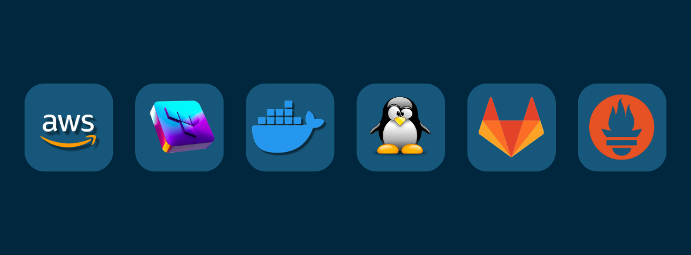

Artigo
Como Alojar um Site Estático na AWS por Menos de 2 Dólares por Mês
S3, CloudFront e HTTPS, passo a passo: a configuração por trás deste site.
Ler artigo →Ajudo a operar uma plataforma de dados em produção sobre Kubernetes: Airflow, Spark, Apache Iceberg e AWS. Descubro porque é que as coisas falham, provo-o com evidências e deixo tudo registado.

Data Platform Engineer na COCUS Portugal desde março de 2026, numa equipa pequena responsável pela infraestrutura de uma plataforma analítica em produção de uma empresa do setor energético. Escala de prevenção 24/7 desde setembro de 2026.
Antes da TI, 30 anos como oficial da Polícia Militar do Estado de São Paulo: médico dentista e depois assessoria jurídica, informações, compras e pessoal. Na reserva como Major. Licenciaturas em Medicina Dentária (USP) e Direito (UNIESP).
Verificar antes de concluir: os meus relatórios separam o que observei diretamente do que é inferência. Linha de comandos primeiro, para que cada investigação possa ser repetida passo a passo. Em produção, uma alteração de cada vez e só depois de reunidas as evidências. Tudo por escrito: runbooks, protocolos e relatórios de incidente.
Operação diária em produção: workloads, agendamento, autoscaling, volumes persistentes e troubleshooting com kubectl. Em preparação para o CKA.
Airflow 2.8 em produção: triagem de falhas de DAGs, saúde do scheduler e investigações na base de dados de metadados.
Spark sobre Kubernetes e Amazon EMR: falhas de drivers e executors, dimensionamento e análise de custos.
Tabelas Iceberg no S3 com Hive Metastore: crescimento de metadados, retenção de snapshots e problemas de locks.
EKS, EMR, S3, IAM e CloudWatch Logs em produção; Lambda, API Gateway, DynamoDB, CloudFront e Terraform em projetos pessoais.
Dashboards e alertas da plataforma em produção, e uma stack própria de monitorização de Airflow em laboratório.
Os casos de produção foram generalizados e os números arredondados, por confidencialidade com o cliente.
Uma pipeline continuava a reportar sucesso enquanto tarefas que deviam demorar minutos passavam das quatro horas. Dois anos de commits minúsculos sem expiração de snapshots tinham levado os metadados Iceberg da tabela a mais de 5.000 vezes o tamanho dos dados.
Ferramentas: AWS CLI, kubectl, Python (fastavro, psycopg2)
Resultado: Causa raiz confirmada, relatório de investigação e plano de correção; uma análise posterior encontrou dezenas de tabelas com o mesmo padrão
Drivers Spark falhavam segundos depois de o cluster escalar. Os nós novos ficavam Ready em cerca de 13 segundos, mas a rede dos pods demorava 2 a 3,5 minutos a convergir. Confirmado com medições ao vivo e registos de auditoria do API server do EKS.
Stack: Amazon EKS, Calico, Cluster Autoscaler, CloudWatch Logs
Resultado: Quatro opções de mitigação documentadas; correção em curso
Um protocolo matinal escrito com 21 verificações, apoiado por uma CLI em Python sem dependências externas que encontra desperdício e trabalho preso entre ambientes: pods em crash loop ou terminados por falta de memória, pods Spark zombie, clusters EMR órfãos, execuções de DAGs presas e locks órfãos no Hive Metastore.
Ferramentas: biblioteca padrão do Python, kubectl, AWS CLI
Destaque: Encontrou clusters EMR ociosos com 18 instâncias e sem encerramento automático
Migração do site de uma entidade comunitária de uma plataforma alojada para a AWS, todo em Terraform: site estático em S3 e CloudFront, backend em API Gateway, Lambda e DynamoDB, DNS no Route 53 e alertas no SNS.
Stack: Terraform, S3, CloudFront, ACM, API Gateway, Lambda, DynamoDB, Route 53, SNS
Destaque: Estado do Terraform no S3 com locking nativo
Monitorização para Apache Airflow. Utiliza Prometheus para recolha de métricas via StatsD e Grafana para visualização em tempo real de heartbeat, vazão e latência de tarefas.
Stack: Prometheus, Grafana, StatsD, PromQL, Docker
Destaque: PromQL com funções rate() para análise de performance instantânea
Pipeline de dados end-to-end com Apache Airflow. Monitoriza a cotação EUR/BRL, processa métricas com Pandas e publica automaticamente um dashboard responsivo através de GitLab CI/CD e Pages.
Stack: Airflow, Docker, Python (Pandas), GitLab CI/CD
Destaque: Arquitetura ETL desacoplada e deploy automatizado via SSH
Kubernetes: preparação para o exame CKA.
Apache Iceberg: funcionamento interno e modelo de concorrência.
dbt: fundamentos, rumo a analytics engineering.
Laboratório: Terraform, GitHub Actions e Linux.
Tuning de performance de Spark e AWS Certified Data Engineer – Associate.
Como os princípios de disciplina e método da Polícia Militar se aplicam à gestão de Cloud e DevOps.
Ler artigo completo →S3, CloudFront e HTTPS, passo a passo: a configuração por trás deste site.
Ler artigo →Como orquestrar GitHub Actions, S3 e CloudFront para entregas globais resilientes.
Ler artigo →